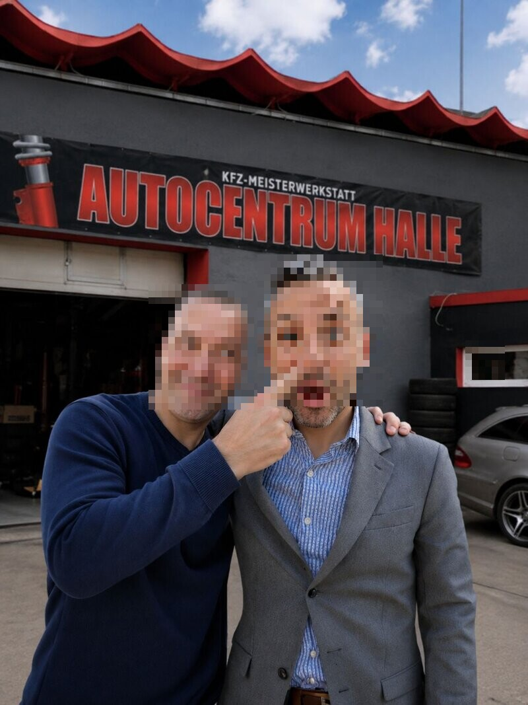
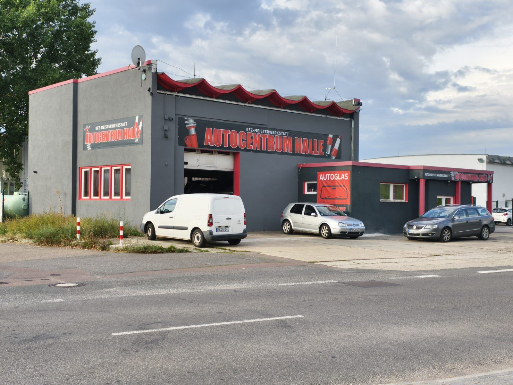

Mo–Fr 08:00–17:00 Uhr
Ihre freie KFZ-Meisterwerkstatt in Halle (Saale)
Inspektion, HU/AU, Reifen, Bremsen, Klimaservice, Karosserie und Aufbereitung – aus einer Hand, zu moderaten Preisen. Sie erreichen uns direkt, ohne Warteschleife.
Direkt anrufen: 0345 – 678 66 91

Unsere Leistungen
Wir arbeiten mit Ihnen gemeinsam ab, was Ihr Fahrzeug braucht – ohne Leistung, die Sie nicht bestellt haben. Tippen Sie eine Leistung an, um Einzelheiten zu sehen.
Inspektion & Wartung
Herstellervorgaben, Flüssigkeitsstände, Verschleißkontrolle – dokumentiert.
Mehr erfahrenHU / AU
Hauptuntersuchung und Abgasuntersuchung, Termin nach Absprache.
Mehr erfahrenBremsen
Beläge, Scheiben, Flüssigkeit – Sicherheitscheck inklusive.
Mehr erfahrenReifen
Wechsel, Auswuchten, Einlagerung – zur passenden Jahreszeit.
Mehr erfahrenKlimaservice
Wartung, Dichtheitsprüfung, Desinfektion des Klimakreislaufs.
Mehr erfahrenKarosserie & Blech
Ausbeularbeiten, Instandsetzung, Lackiervorbereitung.
Mehr erfahrenErsatzteile & Zubehör
Teile für gängige Fahrzeugmodelle, auf Wunsch bestellt.
Mehr erfahrenFahrzeugaufbereitung
Innenreinigung, Politur, Lackversiegelung – in Handarbeit.
Mehr erfahrenAnkauf & Verkauf
Gebrauchtwagen in Zahlung, Vermittlung, Zulassungsservice.
Mehr erfahrenFragen? Direkt anrufen
Sie erreichen uns persönlich – ohne Warteschleife.
Aktuelles
Zurzeit liegen keine Meldungen vor.
Unsere Werkstatt
Sie finden uns im Gewerbegebiet an der Zscherbener Landstraße. Werkstatthalle, Annahme und Stellplätze liegen auf einem gemeinsamen Hof – Sie fahren direkt vor die Halle und werden persönlich in Empfang genommen.

Häufige Fragen
Die häufigsten Fragen unserer Kundinnen und Kunden – kurz beantwortet.
Muss ich vorher anrufen oder kann ich einfach vorbeikommen?
Beides ist möglich. Für HU/AU-Termine und größere Arbeiten bitten wir um eine kurze telefonische Anmeldung, damit wir ausreichend Zeit einplanen können. Kleinere Anliegen können wir oft auch spontan während der Öffnungszeiten annehmen – ein kurzer Anruf vorab spart Ihnen Wartezeit.
Was muss ich zu einem HU/AU-Termin mitbringen?
Bitte bringen Sie die Fahrzeugpapiere und, falls vorhanden, das Serviceheft mit. So können wir alle relevanten Angaben direkt prüfen.
An welchen Fahrzeugen arbeitet die Werkstatt?
Wir arbeiten an gängigen Fahrzeugmodellen. Bei speziellen Anliegen rufen Sie uns bitte kurz an – wir sagen Ihnen offen, ob wir die Arbeit selbst übernehmen können oder an einen festen Partnerbetrieb weitergeben.
Kann ich Reifen einlagern lassen?
Ja. Reifenwechsel, Auswuchten und Einlagerung gehören zu unserem Leistungsangebot. Fragen Sie uns nach den Konditionen für Ihren Reifensatz.
Wie erfahre ich, was eine Reparatur kosten wird?
Rufen Sie uns unter 0345 – 678 66 91 an oder schreiben Sie uns über das Kontaktformular. Wir schauen uns das Fahrzeug an und stimmen den Umfang vor Auftragsbeginn mit Ihnen ab.
Wie lange dauert eine Inspektion?
Die Dauer hängt von Fahrzeug und Umfang ab. Wir nennen Ihnen bei der Auftragsannahme eine realistische Einschätzung, wann Sie das Fahrzeug wieder abholen können.
Was passiert bei Spezialarbeiten wie Karosserie oder Lackierung?
Diese Arbeiten koordinieren wir mit festen Partnerbetrieben aus der Region. Die Übergabe, Absprachen und Endkontrolle laufen über uns – Sie haben weiterhin nur einen Ansprechpartner.
Kann ich mein Fahrzeug abholen lassen?
Ja. Auf Wunsch holen wir Ihr Fahrzeug ab und bringen es nach der Arbeit zurück – gegen Aufpreis. Sprechen Sie uns einfach an, wir stimmen Termin und Ablauf mit Ihnen ab.
Können Sie eine Klimaanlage oder Standheizung nachrüsten?
Ja. Wir rüsten Klimaanlagen und Standheizungen nachträglich ein und arbeiten dabei mit Paketen von Eberspächer und Webasto. Rufen Sie uns an – wir besprechen, was für Ihr Fahrzeug möglich ist.
Bekomme ich einen Kostenvoranschlag?
Sprechen Sie uns bitte direkt an. Wir sagen Ihnen, was möglich ist.
Öffnungszeiten
Mo–Fr 08:00–17:00 Uhr
| Montag | 08:00 – 17:00 Uhr |
|---|---|
| Dienstag | 08:00 – 17:00 Uhr |
| Mittwoch | 08:00 – 17:00 Uhr |
| Donnerstag | 08:00 – 17:00 Uhr |
| Freitag | 08:00 – 17:00 Uhr |
| Samstag | Geschlossen |
| Sonntag | Geschlossen |
Öffnungszeiten in Kalender übernehmen (.ics)
Bitte bringen Sie Fahrzeugpapiere und, falls vorhanden, das Serviceheft mit. Für HU/AU-Termine rufen Sie bitte vorher an: 0345 – 678 66 91.